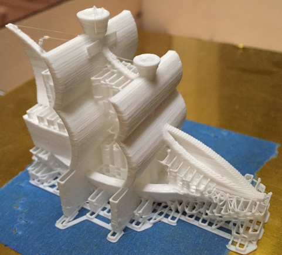
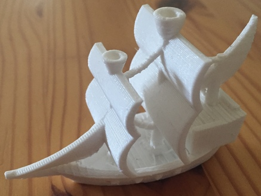
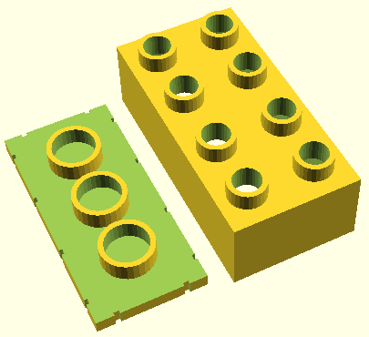
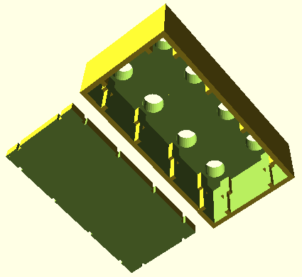

[2018]
For several years, on and off, I have dabbled in 3D printing. To download and order printed items is something trivial these days, however my interest is in the [relatively simple] 3D modeling formats in use. I started out using SketchUp but eventually found it to be restrictive. The only artifact remaining from those days is this compiled X3G file, ready to print on a FlashForge printer (note: I have the older FlashForge with a frame made out of wood; your results on newer models currently available may vary).
Compiled X3G file for printing a ship on a FlashForge printer (Side note: never trust compiled code. You have been warned. Read this classic write-up for reference.)
 My next step was to generate STL files directly. Building a surface is relatively simple, and you can use the following C code to try that out.
C code to convert a surface height matrix into a STL file for 3D printing (read the code for usage details)
Lately I like describing shapes in the OpenSCAD language which has support for set operations (intersect, subtract, union, etc.) as well as loops etc. Here is the code to generate a brick compatible with the Lego Duplo line. The brick is hollow to allow for some further experimentation that a will not go into right now.
OpenSCAD code to generate a two-part 4x2 Duplo-compatible brick
 [2017]
Talk and Interview at GTC 2017 (link via Internet Archive)
Innit at Pirch SOHO
Innit acquires ShopWell
[2013]
Our work on sensor fingerprinting got picked up by SF Chronicle (and also in print, on Friday, October 11th, 2013), ArsTechnica, Discovery News, and other news outlets.
In other news: customizing the Android OS. Don't miss the explainer video about FleetOS!
[2012]
Working hard on research involving the use of implicit learning of motor tasks for authentication purposes. The work was extensively featured in the media in the summer of 2012.
USENIX Security 2012 paper on designing security primitives resistant to user coercion (a.k.a. "rubber hose cryptanalysis").
Articles about this work on Schneier on Security, The Register (you know you've made it when you get called a boffin), NBC News
[2011]
I have been increasingly interested in user behaviors at the intersection of security, wireless computing, and the web. In particular, Android has been an excellent, open platform for experimentation.
Android Open 2011 slides about 3LM's end-to-end Enterprise Android solution
USENIX 2011 paper about an Android web server designed with security in mind; a continuation of our earlier embedded web interface security project
WISEC 2011 paper about Address Space Layout Randomization (ASLR) for mobile devices which requires no kernel changes in the system; in addition, we discuss Crash Stack Analysis: a novel technique for centrally identifying ASLR brute-forcing attacks
HOTMOBILE 2011 paper and slides about MagKey and MicKey: experimental hardware authentication tokens using a smartphone's compass and microphone as receivers; the main advantages of the design are low cost (less than $1 per token) and low power consumption, as well as broad applicability to existing smartphones
[2010]
CSET 2010 paper about Webseclab, a web security education tool I helped create
ESORICS 2010 paper about designing loss-resistant password managers; the high-order bit: it is hard to make security work around irrational human beings; the original publication will appear in the conference proceedings, at www.springerlink.com
A Python script for batch AVI to MP4 conversion on Windows, along with the required the preset file.
[2009]
Web servers are getting embedded in electronic appliances of all kinds: from home routers, to picture frames and IP phones. Usually the goal is to provide a familiar management interface for the devices; security is typically an afterthought. In recent work we have evaluated the security of web interfaces exposed by a broad range of consumer and enterprise hardware.
CCS 2009 paper and slides about XCS vulnerabilities and SiteFirewall, a Firefox extension that prevents XCS attacks from running to completion (this work was also featured in "Communications of the ACM", August 2010, Vol.53, No.8)
BlackHat USA 2009 briefing on Embedded Management Interfaces
Article about our embedded web interface work, on The Register
Тази година Международната Олимпиада по Информатика беше проведена в Пловдив, България. По този случай БНТ засне филм с интервюта на бивши и настоящи участници и ръководители от Българските отбори.
Филм на БНТ по случай МОИ 2009 (IOI 2009, Plovdiv, Bulgaria)
[2008]
Постарах се да напиша накратко впечатленията си от Американската образователна система и от организацията на компютърната индустрия в САЩ (с фокус върху Силициевата Долина). В процеса на редактирането получих много ценни коментари от приятели, които също като мен са бивши олимпийци. Новогодишен подарък за изгряващите звезди на информатиката в България.
[2005]
Network Appliance completed the acquisition of Decru in August. Proud to have been one of the original engineers for the DataFort E-series.
[2001]
Back in the early post-Internet-bubble days, at Oracle we were a small team in between Apps and the DB, figuring out how to best deliver enterprise apps to mobile terminals. (NOTE: In 2023, it is amazing to find out that a piece of code I conceived, designed, and implemented more than two decades ago, the MWA Dispatcher is still alive and well.)
[1999]
ICMAS 2000 paper: "Multi-agent Control of Emergent Behaviors"
ICRA 2000 paper: "Emergent Structures in Modular Self-reconfigurable Robots"
[1992]
Way back when, in the days when you had to line up and wait in order to work on a computer in Bulgaria, some teenagers decided to build an adventure game. Here it is, direct from the archives. (Runs in 16-bit MS-DOS mode. Mostly in Bulgarian. Once in the interactive part of the game, to quit press Esc, select "Quit", then press "D"---not that you would ever want to leave...)